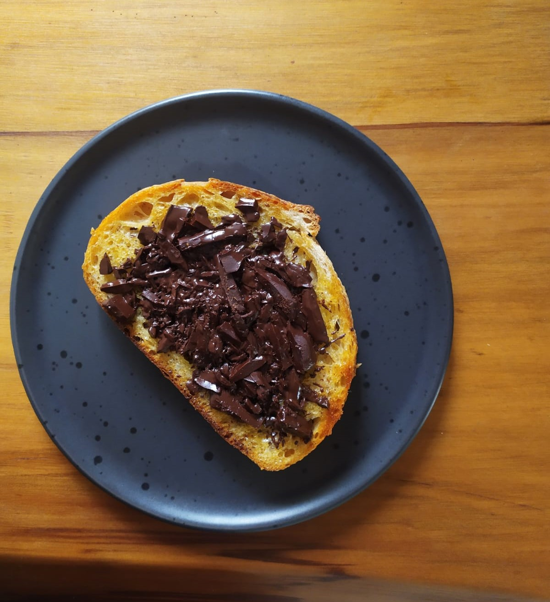

receita

Toast com chocolate
café da manhã ☕
Ingredientes
- 1 fatia de pão - com pão de fermentação natural fica ainda mais gostoso!
- 1 c sp de manteiga vegetal
- Lascas de chocolate - picar pedaços menores da barra com uma faca
Modo de preparo
- Passar a manteiga veg na fatia de pão
- Levar para frigideira até dourar o lado com a manteiga
- Virar e adicionar o chocolate na parte amanteigada - foi por isso que cortamos em lascas, para ter pedaços menores e ele derreter com o calor
- Pronto! Agora é só apagar o fogo, colocar em um prato e se deliciar.
0 curtidas